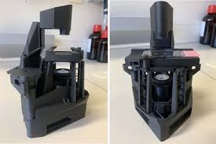

Projects
Selected work — built independently or through the Technology Student Association (TSA). Each project below includes what went wrong, not just what shipped.
TSA Webmaster — 2nd in Virginia · Top 10 in the USA
🏆 National top-10
Web design & development
Team project
The 2026 brief: build a community resource hub that helps residents find local services. We built ConnectHBG for Harrisonburg, Virginia — an interactive directory of local resources with search, filters and a map view; a spotlight section for featured organisations; a community calendar; a crisis-resources page; a city-government page; a submission form so residents can add resources themselves; bilingual (English/Spanish) support and an accessibility toolbar. We placed 2nd in Virginia, then earned top-10 national finalist recognition at the National TSA Conference at National Harbor, MD in June 2026.
My roleProduct direction and quality control on a two-person team. I wrote the detailed feature specifications, ran the testing cycle across fifteen-plus rounds of revisions — logging every layout break, dead link and broken interaction — and made the architecture call to split the single-page app into four linked pages so the entry met the TSA three-page requirement without losing the flow of the main hub.
What I learnedMost of my previous work was solo and self-contained. Here the standard wasn't "does it run on my machine" but "can a stranger find a food bank in ten seconds, on a phone, in Spanish." That reframed testing from checking my own code to watching for the places a real user would give up.

🌐 View the competition site: Harrisonburg Connect →
Featured in Spotswood High School news: "Successful Trip for Spotswood TSA" →
Shards of Balance — a 2-D action platformer, built solo
GameMaker Language
Self-taught
Solo project
6 levels + boss fight
A Python course taught me I loved coding. What I actually wanted to build, though, was a world — so I taught myself GameMaker Language from scratch and spent months building Shards of Balance: a pixel-art platformer where the Crystal of Balance has shattered and you fight through six levels of a corrupted realm to restore it. I designed and coded every system myself — while preparing for my GCSE exams.

The title screen — new game, continue from your last level, or quit.
What's in itSix hand-built levels across forest, cavern and boss-arena biomes; six enemy types with distinct behaviour (chasing skeletons, slow-but-tanky plants, ranged fire spirits, speed-draining haunted skulls, archers, and an enemy spawner); three NPCs who carry the story; health and speed potions; breakable crates; fire traps; a special ability; scripted cutscenes; and a final boss, Exilion, with three attack phases.
Level one, and the hidden cavern biome — which runs its own lighting system and floating-particle effects.
The engineering problem I'm proudest ofDifficulty had to rise without me building a new enemy for every level. Instead I made variants: the same enemy object reads its speed, damage and health from its creation event, and spawns a visual effect above itself — a blue aura for fast versions, a red one for high-damage versions — so the player can read the threat instantly. One object, many difficulty tiers, and the game teaches its own rules without a tutorial.
Systems I had to build from nothingA dialogue system, a camera controller, room transitions, screen shake, parallax backgrounds, a particle controller, a white flash shader for damage feedback, a save system for "continue," and a cutscene engine for the ending.
A chest grants the Witch's Infernal Blaze, which recharges every 30 wand shots — and the final fight against Exilion.
What I'd fixWriting my own evaluation was the most useful part of the project. My honest verdict: the enemy AI is reactive rather than smart, the menu is plain, and the difficulty curve between the last level and the boss is uneven. The next version needs varied enemy behaviour, a second weapon, and a rebalanced early game.
The player's guide I designed for the game, and hand-drawn art from the closing cutscene.
▶ Play Shards of Balance on itch.io
TODO: itch.io linki gelince butonun href'i güncellenecek; istersen 30-60 sn gameplay videosu da eklenir.
TSA Video Game Design — Hollowpoint (Unity, team lead)
Unity
Team lead
Programmer & level design
TSA Competition
The brief was to take a retro concept and rebuild it with something that wasn't possible back then. Our team pitched several ideas; the one we built was Hollowpoint — my concept. You play an illuminating ghost collecting soul fragments through the abandoned city of Halomyre, trading them to open doors deeper into the map. The modern twist is a corruption mechanic: your future self appears to help you, but every appearance destabilises the world — distorting visuals, faking messages, and granting the ghosts new abilities. Help has a cost.
My roleTeam lead, and a programmer on the build. I assigned roles, ran meetings and kept scope realistic against the competition deadline, while building the soul-fragment system, puzzle logic, the guiding-light navigation cues, the cave layout and tileset, and the main menu. I also spent several sessions untangling Unity version-control problems so the whole team could work on one project without overwriting each other.
What building in a team taught meWorking alone on Shards of Balance, every decision was mine and every bug was mine. Leading a Unity project moved the hard part somewhere else: agreeing on scope, keeping the story ambitious but shippable, resolving technical disagreements, and making sure the pieces different people built actually fit together.
TODO (Kerem): oyundan 2-3 ekran görüntüsü / build görseli eklenecek.
TSA Engineering Design — Modular Smartphone Microscope
Optics & CAD (Onshape)
3D printing
13 design iterations
TSA Competition 2026
Many classrooms lack working microscopes — yet nearly every student carries a phone with a high-resolution camera. For the TSA theme "Engineering the Tools of Scientific Discovery," our team designed a MagSafe-mounted, 3D-printed modular microscope that turns a smartphone into a functional lab instrument, at a target cost under $25.
How we startedWe bought a real microscope and dissected it to understand its optics and mechanics, then designed our own compact system from scratch: a rotating lens carousel (4×/10×/40×) with magnetic click-stops, a screw-lift focus stage, and a modular LED illumination box.
First hand sketches from our design notebook — where every iteration started.
Problem → solution (my favorite example)MagSafe rings are perfect circles, so the mount rotated slightly on every attach — misaligning the lens with the camera. We added an angular jut-out that registers against the phone's camera bump, turning alignment from a user-skill problem into a mechanically guaranteed result.
Iteration, including failuresThirteen documented iterations: a clip-style mount that couldn't center (eliminated), a drop-in lens carousel where lenses shifted (redesigned with threaded seats), a rack-and-pinion focus system too bulky for a phone (replaced by a screw-lift), a light box too big to hold comfortably (shrunk and made modular). Each failure drove the next design.
ResultThe prototype resolves onion epidermal cells at 4×, 10×, and 40× magnification. My role: co-lead on CAD modeling of the carousel, arm, and stage; microscope dissection; sketching; and writing the engineering portfolio.
Three projects, one habitA game, a website and a microscope don't look related — but each one came down to the same loop: build the smallest version, break it on purpose, find the real cause, rebuild. That loop is what I actually want to study.



TODO (Kerem): istersen onion cell mikroskop görüntüsü de eklenir; tam portfolio PDF'ine link verilebilir.
Operation Catapult — Rose-Hulman Institute of Technology
Summer engineering program
Team build
Hands-on prototyping
At Rose-Hulman's Operation Catapult residential engineering program, we designed and built a working catapult from scratch — moving from concept sketches and calculations to a physical launch-tested machine.
My roleGroup lead of a two-person team — we designed, built, and tested every part together.
The catapult, our project poster, and projectile-motion calculations from the design notebook.